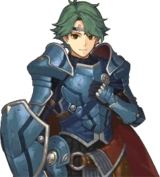
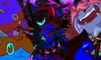
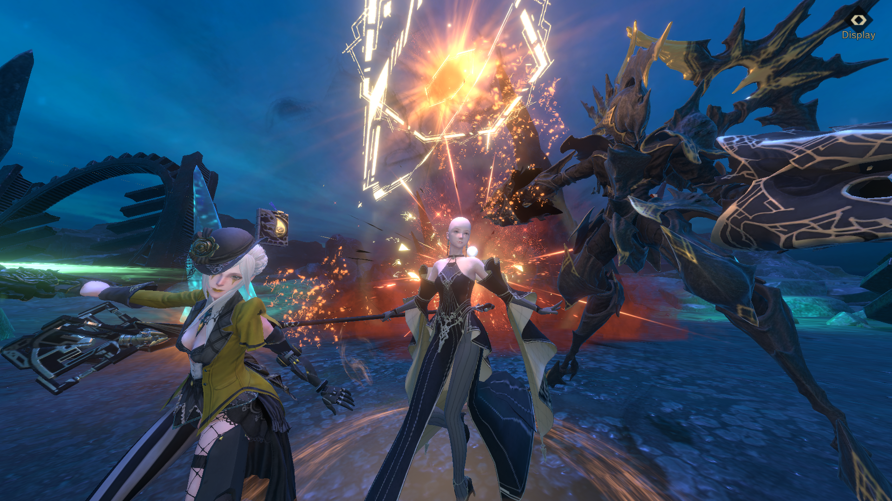
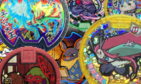
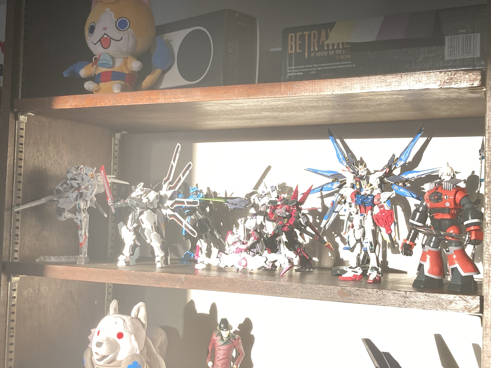
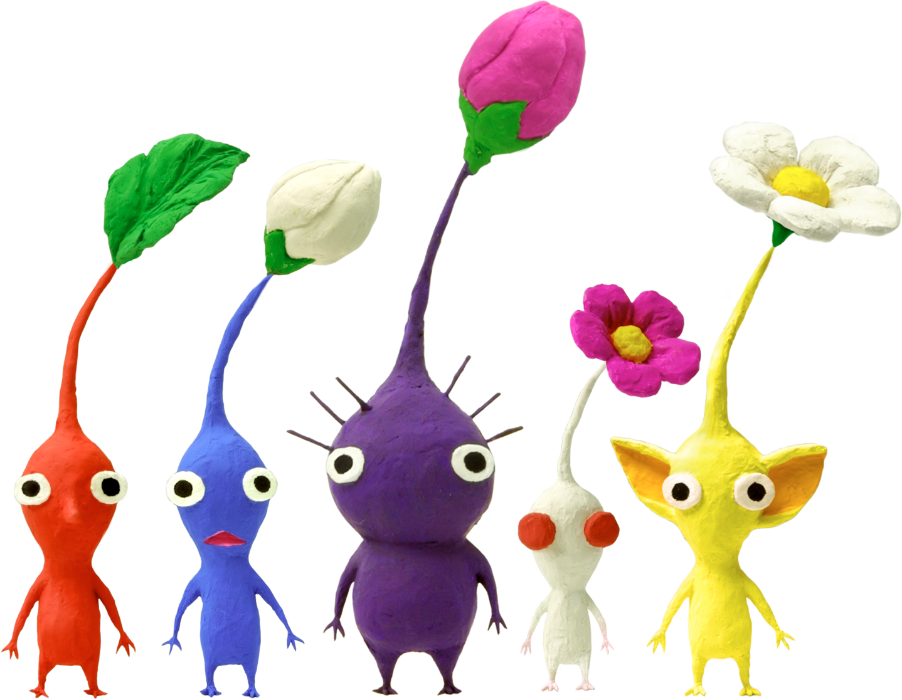

I added a portion of my site for Island Off Outer Darkness, the game that I'm making. And, uh, it's kind of ugly, but it felt like the right amount of ugly? Fuckin', idk, dude.
You can now click on certain images to inspect them more closely! The site has been lacking this feature for a long time, and I finally decided to get around to adding it. I need to manually update all the old blog posts, which I may or may not do at a later date, but for all the galleries and blog054-onward, you can now, uh, do that. Completely forgot the name for it, lol. Hope y'all like it.
It's now Autumn! The 😎 in the Zugerujk.net was an Ascended Sleeper for Summer 2024, but the 😎 has returned. Don't worry — the Ascended Sleeper will still be around at the end of every hour! And man, what a Summer, huh? I didn't expect it to be as much of a, to quote everyone alive, "
I changed up the look of the background triangles, y'all. A few days ago, actually! They're brighter in the top right corner, and, uh. Are still a tad goofy, but that depends on the page. I like how they look a lot more now - akin to the triangles After Effects file. Hope y'all enjoy.
It's almost summertime! For Summer 2024, the 😎 in the Zugerujk.net title box will be replaced with an Ascended Sleeper, from Morrowind! My favorite guys!
Now that this place is "finished", uh. I dunno what's in store for this website, other than consistent blog updates and upkeep. I guess we'll see, won't we? I have a bunch of non-website projects in the works, which I'll probably use this newsfeed for on occasion. In the meantime, uh, fuckin' peep everything! Look at everything, see everything, do everything. Come back here every once in a while. We're so back, reddit. We're so back!
We made it. It's been a little under a year since I first had the idea for this site, and, uh. It's now in a state exactly how I imagined it! It's what I would classify as "finished" though, as an active project, I'll be updating it awhile longer (probably). I'm really proud of what I've done, I'm really proud of this place, I'm really, uh. I'm a lot of things, now that we're at the full release, but most importantly, I'm grateful to you, for reading this! For spending time and care here. Thanks. (:
The full release, baby. Once I get everything polished up real nice, and I clean up the codebase some more. And probably add a 404 page! Exciting times!
All planned features are here, folks! We're
Miiiiiiiinor changes, mostly! The blog is now sortable by a few categories, and the backend functionality is much better. Happy Birthday to me (:
A blog map, a motion toggle, the Gallery, some little features I've been thinking up, and, uh, even MORE general polish.
I've done a lot of feeling things out, and the v0.6 release is a pretty minor one! It adds Fuster, the lovable scamp, to the right of the navbar, and if you click them they'll say some words about the page you're reading. v0.6 includes some general polish, too. I'm getting things set up for v0.7 to include the blog map, and I'll get to a motion toggle and the Gallery... some time in the future! Until then, read blog021 and any future ones. I'm real proud of my blog 😌
Well, it's been, what, 6 months of this website? Boy howdy! Pretty proud of myself, to be honest. It's very nice to have this place, and to have people who do actually read it. I intended it as a "landing page", for ME, and y'know? We're top of the search results for "Zugerujk" on google.com. We did it, reddit! Anyways, stuff coming in the new year. 'Till then, uh, read blog020 and check out the Yo-kai Medal Favorite Picker. 'Till morrow's morrow! 🫡
I was planning something a little bigger, life got in the way. Read blog013; I think it's pretty good. Anyways, Projects page is a lil more updated, and the Blog page is a little more future-proofed. Gotta still, uh, implement the map. But I'll get to that. In a more opportune season.
A motion toggle, a selector for the background, the Gallery, some little features I've been thinking up, and, uh, more general polish.
This is the first BIG update, y'all. Everything except the gallery is in a presentable state. So, y'know, everything works now. And I made the background pretty! How exciting! I've still got a bunch of stuff in the works, so expect v0.5 or v0.6 to be another big one. Until then, I'll keep updating the blog (we're on blog008 now 🤩), and there'll probably be a few bells and whistles I add in.
The blog tab works. I've got my first blog post as well. So, uh, yeah. Also set up a newsfeed archive so I can safely rotate out newsfeed items without confining essential Zugstory to git history.
All the shit on the taskbar, a side project for a youtube video, a better background, a more refined format, a better Zug splash up there on the top right, and more.
I got this thing up and running! Hell yeah. I'm gonna be building this website over the coming weeks, but here it is in its most base, neutral state. The navbar doesn't actually link anywhere yet, and there's nothing else here, but damn. Big things ahead.





